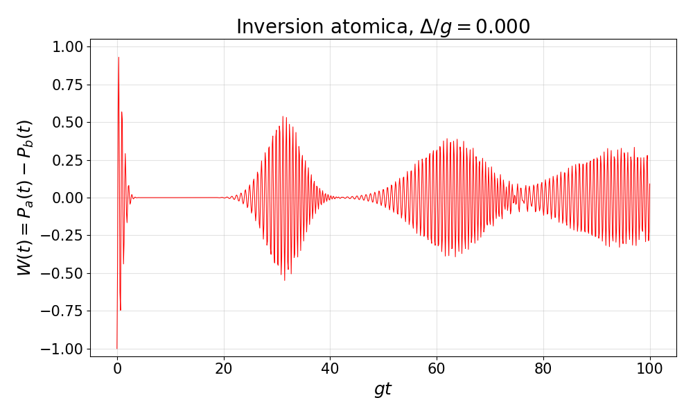
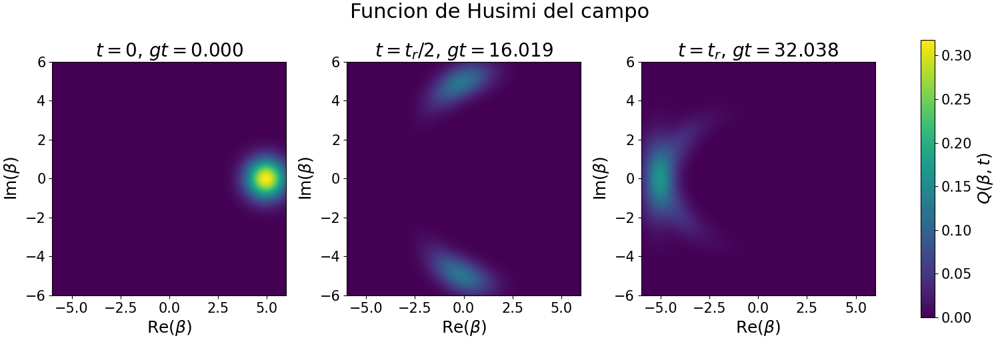

Preparación de estados y entrelazamiento
- Idea física
- Medición conjunta átomo-campo
- Medición del estado interno del átomo
- Medición del estado del campo
- Estados condicionales tras la medición
- Medición experimental del átomo
- Inversión atómica, colapsos y revivals
- Función Q de Husimi del campo
- Preparación de superposiciones coherentes
- Ingeniería de estados finitos de Fock
1. Idea física
Después de la interacción de Jaynes-Cummings-Paul, el estado del átomo y el estado del campo ya no tienen por qué factorizarse. En general no existe una escritura de la forma
$$\ket{\psi(t)}=\ket{\psi_{\text{at}}(t)}\otimes\ket{\psi_{\text{c}}(t)}.$$Cuando esto ocurre, el átomo y el campo están entrelazados. La información sobre el campo queda parcialmente escrita en los grados de libertad internos del átomo, y la información sobre el átomo queda parcialmente escrita en el campo. Por eso, midiendo el átomo se puede obtener información del campo de radiación. Más aún, si después de la interacción se selecciona únicamente cierto resultado atómico, la medición no solo observa el campo: también lo prepara. Esta es la idea básica de la ingeniería de estados cuánticos.
Se toma como punto de partida el ansatz general
$$\ket{\psi(t)}=\sum_{n=0}^{\infty}\left(\psi_{a,n}(t)\ket{a,n}+\psi_{b,n}(t)\ket{b,n}\right),$$donde $\ket{a}$ es el estado atómico excitado, $\ket{b}$ el estado base y $\ket{n}$ el estado de Fock del campo. Todas las probabilidades de medición se obtienen proyectando este vector sobre el estado de referencia adecuado.
2. Medición conjunta átomo-campo
Se prepara inicialmente el átomo en un estado $\ket{\psi_{\text{at}}(0)}$ y el campo en $\ket{\psi_{\text{c}}(0)}$. Después se dejan interactuar durante un tiempo $t$. Al final se pregunta si el átomo se encuentra en un estado de referencia $\ket{F_{\text{at}}}$ y si el campo se encuentra en un estado de referencia $\ket{F_{\text{c}}}$. Cuando ambos subsistemas se encuentran en sus estados de referencia, el evento se acepta; si no, se descarta.
La mecánica cuántica no predice un resultado individual con certeza. Lo que predice es la probabilidad de obtener ese resultado. Para una medición conjunta, la amplitud de probabilidad es
$$A(t;F_{\text{at}},F_{\text{c}})=\bra{F_{\text{c}}}\bra{F_{\text{at}}}\psi(t)\rangle,$$y la probabilidad asociada es
Sustituyendo el ansatz,
$$A(t;F_{\text{at}},F_{\text{c}})= \sum_{n=0}^{\infty} \left[ \psi_{a,n}(t)\braket{F_{\text{at}}|a}\braket{F_{\text{c}}|n} + \psi_{b,n}(t)\braket{F_{\text{at}}|b}\braket{F_{\text{c}}|n} \right].$$Es importante que primero se suman amplitudes y solamente después se toma el módulo cuadrado. Por tanto, si el estado de referencia del campo tiene superposición de varios números de fotones, las contribuciones con distintos $n$ interfieren entre sí. Esta interferencia no es un detalle algebraico: es la señal de que la medición conjunta conserva información de fase entre los distintos caminos cuánticos que llevan al mismo resultado final.
3. Medición del estado interno del átomo
Si únicamente se mide el estado interno del átomo y no se observa en qué estado quedó el campo, entonces el campo debe tratarse como grado de libertad no observado. Matemáticamente esto significa sumar sobre una base completa del campo. Usando la base de Fock,
Si el estado de referencia atómico es
$$\ket{F_{\text{at}}}=f_a\ket{a}+f_b\ket{b},$$entonces
$$\bra{n}\bra{F_{\text{at}}}\psi(t)\rangle= f_a^*\,\psi_{a,n}(t)+f_b^*\,\psi_{b,n}(t),$$y, por tanto,
$$W(t;F_{\text{at}})= \sum_{n=0}^{\infty} \left|f_a^*\,\psi_{a,n}(t)+f_b^*\,\psi_{b,n}(t)\right|^2.$$Para los dos estados internos de la base atómica se recuperan las poblaciones usuales:
$$W(t;a)=\sum_{n=0}^{\infty}|\psi_{a,n}(t)|^2,\qquad W(t;b)=\sum_{n=0}^{\infty}|\psi_{b,n}(t)|^2.$$La diferencia con la medición conjunta es conceptual. En la medición conjunta se proyecta también el campo sobre un estado definido y sobreviven interferencias entre diferentes números de fotones. En la medición atómica marginal, en cambio, se suma incoherentemente sobre los estados del campo: cada valor de $n$ contribuye con una probabilidad, no con una amplitud común con los demás valores de $n$.
Esto se ve al expandir el módulo cuadrado. Para cada $n$ aparecen términos diagonales,
$$|f_a|^2|\psi_{a,n}|^2+|f_b|^2|\psi_{b,n}|^2,$$que son reales y no negativos, y términos cruzados,
$$f_a^*f_b\,\psi_{a,n}\psi_{b,n}^* +f_b^*f_a\,\psi_{b,n}\psi_{a,n}^*,$$que dependen de la fase relativa entre las amplitudes atómicas. Esos términos cruzados pueden sumar o restar y son los responsables de la interferencia cuando el estado de referencia atómico es una superposición.
4. Medición del estado del campo
Si se mide el campo en un estado $\ket{F_{\text{c}}}$ y no se observa el estado atómico, entonces se traza sobre los dos estados internos del átomo:
En términos de probabilidades conjuntas, esta probabilidad marginal se escribe como
$$W(t;F_{\text{c}})=W(t;a,F_{\text{c}})+W(t;b,F_{\text{c}}).$$La suma es incoherente entre los resultados atómicos $a$ y $b$ porque esos resultados son distinguibles. Si no se lee el átomo, pero en principio el estado atómico contiene información sobre el camino seguido por el sistema, esa información reduce las interferencias visibles en el campo reducido.
5. Estados condicionales tras la medición
Las expresiones anteriores dan probabilidades. El siguiente paso consiste en preguntar cuál es el estado de un subsistema después de medir el otro. Si se detecta el átomo en el estado $\ket{F_{\text{at}}}$, el estado del campo se obtiene proyectando el estado total sobre ese estado atómico:
$$\ket{\tilde\psi_{\text{c}}(t;F_{\text{at}})}=\bra{F_{\text{at}}}\psi(t)\rangle.$$La tilde recuerda que este vector no está normalizado. Su norma cuadrada es precisamente la probabilidad de obtener el resultado atómico:
$$\braket{\tilde\psi_{\text{c}}|\tilde\psi_{\text{c}}}= W(t;F_{\text{at}}).$$Por tanto, el estado normalizado del campo condicionado a esa detección es
El significado físico es directo: este estado del campo solo aparece en las corridas donde el átomo fue encontrado en $\ket{F_{\text{at}}}$. Como ese evento ocurre con probabilidad $W(t;F_{\text{at}})$, la normalización debe hacerse con esa misma probabilidad.
De forma completamente análoga, si se mide el campo en $\ket{F_{\text{c}}}$, el estado atómico condicionado queda
6. Medición experimental del átomo
6.1. Medición de poblaciones por ionización
Para medir si el átomo salió en $\ket{a}$ o en $\ket{b}$ se usa típicamente ionización selectiva por campo eléctrico. Se aplica un campo externo en la dirección $z$,
$$\mathbf E=E_0\,\hat{\mathbf z},$$de modo que la energía potencial asociada al dipolo en el campo externo es
$$V_E(z)=-\mathbf d\cdot\mathbf E.$$Para un electrón ligado, esta contribución inclina el potencial Coulombiano. De manera esquemática,
$$V_{\text{tot}}(z)=V_C(z)+V_E(z) \simeq -\frac{e^2}{4\pi\epsilon_0|z|}-eE_0 z,$$con el signo efectivo fijado por la dirección del campo y la carga del electrón. Al aumentar $E_0$, la barrera de potencial se reduce. Un estado de Rydberg con energía más alta puede tunelar e ionizarse para un campo más débil que un estado más ligado. Así, si los niveles $\ket{a}$ y $\ket{b}$ tienen umbrales de ionización distintos, se incrementa el campo eléctrico en el tiempo y se observa la corriente de ionización $I(t)$.
La posición temporal de los máximos de $I(t)$ indica qué nivel se ionizó, y el área bajo cada máximo da información sobre la población correspondiente. De esta forma se miden directamente las probabilidades $W(t;a)$ y $W(t;b)$.
6.2. Proyección sobre superposiciones atómicas
La ionización selectiva mide poblaciones en la base $\{\ket{a},\ket{b}\}$. Para medir una superposición arbitraria,
$$\ket{F_{\text{at}}}=\epsilon_a\ket{a}+\epsilon_b\ket{b},$$se antepone un pulso clásico resonante que rota el estado atómico antes de la ionización. Si el estado atómico antes del pulso es
$$\ket{\psi_{\text{at}}}=C_a\ket{a}+C_b\ket{b},$$un pulso resonante con fase adecuada produce una transformación del tipo
$$C_a'=\cos(\Omega t)C_a-i e^{-i\varphi}\sin(\Omega t)C_b,$$ $$C_b'=\cos(\Omega t)C_b-i e^{i\varphi}\sin(\Omega t)C_a,$$donde $\Omega$ es la frecuencia clásica de Rabi. Al elegir el área del pulso $\Omega t$ y la fase $\varphi$, se puede hacer que la amplitud $C_a'$ sea proporcional a la proyección $\braket{F_{\text{at}}|\psi_{\text{at}}}$. Luego basta medir la población en $\ket{a}$ por ionización. Así se implementa experimentalmente una proyección sobre el estado de referencia $\ket{F_{\text{at}}}$.
7. Inversión atómica, colapsos y revivals
La inversión atómica se define como la diferencia entre la probabilidad de encontrar el átomo excitado y la probabilidad de encontrarlo en el estado base:
Si $I(t)>0$, es más probable hallar el átomo excitado. Para un ensamble, esto significa que hay más átomos en $\ket{a}$ que en $\ket{b}$. Si $I(t)<0$, domina la población del estado base.
Se considera ahora el caso resonante con el átomo inicialmente en el estado base y el campo inicialmente en
$$\ket{\psi_{\text{c}}(0)}=\sum_{n=0}^{\infty}W_n\ket{n}.$$En cada sector de número de fotones, el modelo de Jaynes-Cummings-Paul da
$$\ket{b,n}\longrightarrow \cos(gt\sqrt{n})\ket{b,n} -i\sin(gt\sqrt{n})\ket{a,n-1},$$con el término $\ket{a,-1}$ ausente para $n=0$. Por tanto,
$$P_a(t)=\sum_{n=0}^{\infty}|W_n|^2\sin^2(gt\sqrt{n}),\qquad P_b(t)=\sum_{n=0}^{\infty}|W_n|^2\cos^2(gt\sqrt{n}).$$Definiendo $P_n=|W_n|^2$, la inversión queda
Si el campo es coherente con número medio de fotones $\bar n$, entonces
$$P_n=e^{-\bar n}\frac{\bar n^n}{n!}.$$Como el paquete de Poisson está centrado alrededor de $\bar n$, la inversión es una suma de oscilaciones con frecuencias $2g\sqrt{n}$. Al inicio esas oscilaciones están aproximadamente en fase, pero después se desincronizan: aparece el colapso. Más tarde, las fases de sectores vecinos vuelven a alinearse aproximadamente y aparece un revival.

Para ver de dónde sale la escala temporal del revival, se escribe
$$n=\bar n+m,$$y se expande la raíz alrededor de $\bar n$:
$$\sqrt{\bar n+m} =\sqrt{\bar n} +\frac{m}{2\sqrt{\bar n}} -\frac{m^2}{8\bar n^{3/2}} +\cdots.$$Por tanto, la fase que aparece en la inversión se aproxima por
$$2gt\sqrt{\bar n+m} \simeq 2gt\sqrt{\bar n} +\frac{gt}{\sqrt{\bar n}}m -\frac{gt}{4\bar n^{3/2}}m^2+\cdots.$$El término lineal controla la realineación de fases entre componentes vecinas. Cuando su incremento es $2\pi$, los sectores cercanos al máximo de la distribución vuelven a estar aproximadamente en fase:
$$\frac{gT_R}{\sqrt{\bar n}}\simeq 2\pi,\qquad T_R\simeq \frac{2\pi\sqrt{\bar n}}{g}.$$En la convención usada para la figura, la escala se toma con $\sqrt{\bar n+1}$, de modo que para $\bar n=25$ se obtiene $gT_R=2\pi\sqrt{26}\simeq 32.038$. El término cuadrático no permite una realineación perfecta: corrige la fase, ensancha los revivals y, a tiempos más largos, favorece revivals fraccionarios.
También es útil introducir la señal compleja
$$S(t)=\sum_{n=0}^{\infty}P_n e^{i2gt\sqrt{n}},$$de modo que
$$I(t)=-\operatorname{Re}S(t).$$El módulo de $S(t)$ mide qué tan sincronizadas están las contribuciones de los distintos sectores de fotones. Cuando $|S(t)|$ es grande, aparece una oscilación visible; cuando $|S(t)|$ es pequeño, las contribuciones se cancelan y la inversión colapsa hacia cero.
8. Función Q de Husimi del campo
La dinámica anterior también deja una huella directa en el estado reducido del campo. Si el átomo no se mide, el campo se describe por
$$\hat\rho_{\text{c}}(t)=\operatorname{Tr}_{\text{at}} \left[\ket{\psi(t)}\bra{\psi(t)}\right].$$Para el átomo inicialmente en $\ket{b}$,
$$\ket{\psi(t)}= \sum_{n=0}^{\infty}W_n \left[ \cos(gt\sqrt{n})\ket{b,n} -i\sin(gt\sqrt{n})\ket{a,n-1} \right],$$y al trazar sobre el átomo se obtiene una mezcla de dos contribuciones de campo:
$$\hat\rho_{\text{c}}(t)= \ket{\phi_b(t)}\bra{\phi_b(t)} + \ket{\phi_a(t)}\bra{\phi_a(t)},$$con
$$\ket{\phi_b(t)}=\sum_{n=0}^{\infty}W_n\cos(gt\sqrt{n})\ket{n},$$ $$\ket{\phi_a(t)}=-i\sum_{n=1}^{\infty}W_n\sin(gt\sqrt{n})\ket{n-1}.$$La función Q de Husimi se define como
Sustituyendo la descomposición anterior,
$$Q(\beta,t)=\frac{1}{\pi} \left( |\braket{\beta|\phi_b(t)}|^2+ |\braket{\beta|\phi_a(t)}|^2 \right).$$Esta representación en espacio de fase permite ver cómo el paquete coherente inicial se deforma, se separa en componentes y vuelve a reagruparse alrededor de los tiempos de revival.

9. Preparación de superposiciones coherentes
Una aplicación importante del entrelazamiento átomo-campo es la preparación de superposiciones de estados coherentes con fases distintas, es decir, estados tipo gato. Se considera un átomo preparado en
$$\ket{\psi_{\text{at}}(0)}=C_a\ket{a}+C_b\ket{b},$$y un campo
$$\ket{\psi_{\text{c}}(0)}=\sum_{n=0}^{\infty}W_n\ket{n}.$$En el régimen altamente desintonizado, el intercambio real de excitaciones queda suprimido, pero el campo adquiere fases condicionadas al estado atómico. Por eso la evolución tiene la forma
$$\ket{\psi(t)}= \sum_{n=0}^{\infty}W_n \left[ C_a e^{i\phi_{a,n}(t)}\ket{a,n} + C_b e^{i\phi_{b,n}(t)}\ket{b,n} \right].$$En el límite dispersivo las fases son lineales en el número de fotones, más fases globales:
$$\phi_{a,n}(t)=\phi_a(t)+n\theta_a(t),\qquad \phi_{b,n}(t)=\phi_b(t)+n\theta_b(t),$$con $\theta_{a,b}(t)$ proporcionales a $g^2t/\Delta$. Esto significa que cada componente atómica rota el estado del campo en una dirección distinta en el espacio de fase.
Si ahora se mide el átomo y se acepta únicamente el resultado
$$\ket{F_{\text{at}}}=f_a\ket{a}+f_b\ket{b},$$el estado condicionado del campo es
La constante $\mathcal N$ normaliza el estado y contiene la probabilidad de éxito de la postselección. Lo esencial es que las amplitudes originales $W_n$ no solo se multiplican por números constantes: reciben fases dependientes de $n$. Por eso la medición atómica puede cambiar considerablemente el estado del campo.
Si el campo inicial es coherente,
$$\ket{\alpha}= e^{-|\alpha|^2/2}\sum_{n=0}^{\infty}\frac{\alpha^n}{\sqrt{n!}}\ket{n},$$entonces multiplicar cada amplitud por $e^{in\theta}$ equivale a rotar la amplitud coherente:
$$e^{in\theta}\alpha^n=(\alpha e^{i\theta})^n.$$Así, después de la proyección atómica,
donde $A=f_a^*C_a e^{i\phi_a}$ y $B=f_b^*C_b e^{i\phi_b}$. Esta es una superposición coherente de dos paquetes con fases diferentes. Cuando las dos amplitudes quedan bien separadas en espacio de fase, el estado preparado es el estado gato discutido en las notas de estados apachurrados.
10. Ingeniería de estados finitos de Fock
El objetivo ahora es preparar un estado finito del campo,
$$\ket{\psi_{\text{target}}}=\sum_{n=0}^{N}d_n\ket{n} =d_0\ket{0}+d_1\ket{1}+\cdots+d_N\ket{N}.$$Como se parte del vacío, para llegar a $\ket{N}$ se deben transferir excitaciones a la cavidad. Una idea básica sería inyectar $N$ átomos excitados y hacer que todos salgan en el estado base; de esta forma cada átomo depositaría una excitación en el campo. Sin embargo, eso solo produce transferencia de energía. Para preparar una superposición coherente de los primeros $N+1$ estados de Fock, también se necesita controlar las fases y las interferencias entre los distintos caminos.
El procedimiento consiste en enviar átomos resonantes, uno por uno. El $k$-ésimo átomo entra en una superposición
$$\ket{\chi_k}=\alpha_k\ket{a}+\beta_k\ket{b},$$interactúa durante un tiempo $\tau_k$ y luego se mide. Se conservan solo las corridas en las que el átomo sale en $\ket{b}$. Si antes del átomo $k$ el campo está en
$$\ket{\psi_{\text{c}}^{(k-1)}}=\sum_{n=0}^{k-1}c_n^{(k-1)}\ket{n},$$entonces, después de la interacción resonante y de postseleccionar el átomo en $\ket{b}$, los nuevos coeficientes no normalizados cumplen la recurrencia
con $c_{-1}^{(k-1)}=0$. El primer término corresponde al camino donde el átomo entró en $\ket{b}$ y no depositó excitación en la cavidad. El segundo término corresponde al camino donde el átomo entró en $\ket{a}$, emitió un fotón y salió en $\ket{b}$. La misma amplitud final $\ket{n}$ puede recibir contribuciones de dos historias distintas; por eso aparece interferencia.
Para el primer átomo, con la cavidad inicialmente en el vacío, $c_0^{(0)}=1$, se obtiene
$$\ket{\tilde\psi_{\text{c}}^{(1)}}= \beta_1\ket{0} -i\alpha_1\sin(g\tau_1)\ket{1}.$$Después de normalizar, el campo queda en una superposición de $\ket{0}$ y $\ket{1}$. Para el segundo átomo,
$$\ket{\tilde\psi_{\text{c}}^{(2)}}= c_0^{(2)}\ket{0}+c_1^{(2)}\ket{1}+c_2^{(2)}\ket{2}.$$Solo hay un camino que lleva de $\ket{0}$ a $\ket{2}$: los dos átomos deben transferir su excitación. También hay un camino que deja el vacío sin alterar: ambos átomos deben contribuir por su componente $\ket{b}$. En cambio, para terminar en $\ket{1}$ hay dos caminos indistinguibles: puede haber emitido el primer átomo o puede haber emitido el segundo. La amplitud final de $\ket{1}$ es la suma coherente de ambos caminos.
Repitiendo el proceso con $N$ átomos, cada paso agrega como máximo un fotón y aumenta en una unidad la dimensión accesible del espacio de Fock. Al escoger las amplitudes $\alpha_k,\beta_k$ y los tiempos $\tau_k$, se pueden ajustar los coeficientes finales para aproximar o realizar exactamente el conjunto deseado $\{d_0,d_1,\ldots,d_N\}$, siempre condicionado a que todas las mediciones atómicas den el resultado postseleccionado.
La idea que unifica toda la nota es que la medición no es solo lectura. En un sistema entrelazado, proyectar el átomo selecciona una rama coherente del campo; por eso una secuencia controlada de interacciones y mediciones puede usarse como herramienta de preparación de estados.